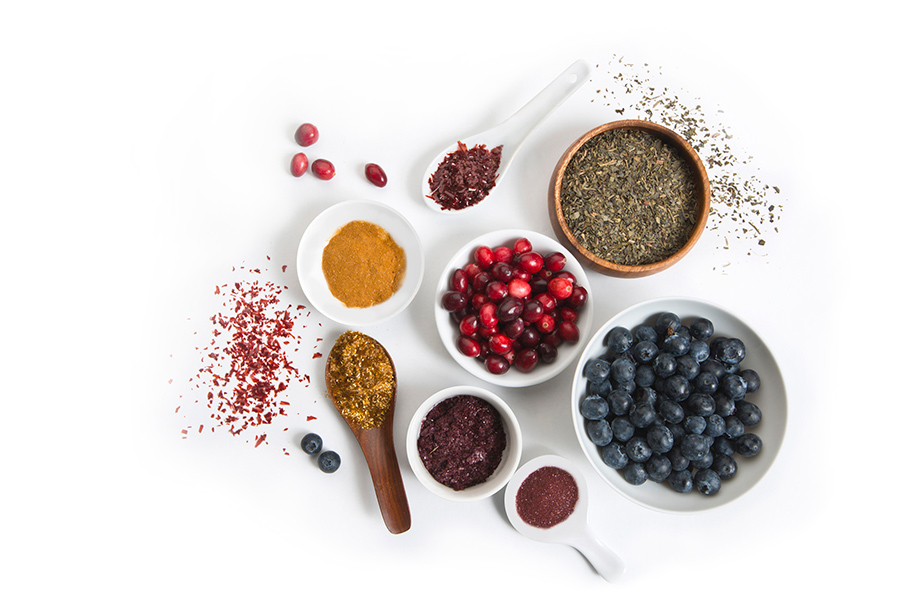

{% extends "getrecipe/base.html" %}

{% block title %}
    Išči recepte
{% endblock %}

{% block content %}

    <div class="jumbotron">
        <h1>Išči recepte</h1>
        <form>
        Spodaj izberi sestavine, ki so ti na voljo. Lahko izbereš samo eno ali pa se odločiš za več.
        <br>
        <i> Recept naj vsebuje vse iskane sestavine:</i> našel boš recepte, ki vsebujejo vse sestavine, ki si jih izbral. <br>
        <i> Sestavine recepta naj bodo vsebovane v iskanih sestavinah:</i> našel boš recepte, ki vsebujejo vsaj eno sestavino, ne pa nujno vseh, ki si jih izbral.
        </form>
    </div>

<div id="about" class="container-fluid">
  <div class="row">
    <div class="col-sm-8">
      <h4>
      <form action="{% url 'search' %}" method="post">
            {% csrf_token %}
            {{ form }}
            <div align="center">
                <input type="submit" value="Išči"/>
            </div>    
      </form>
      </h4>
    </div>
    <div class="col-sm-4">
      <span></span>
    </div>
  </div>
</div>

{% endblock %}
